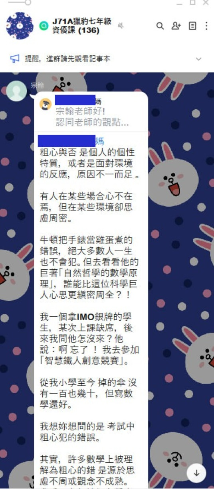
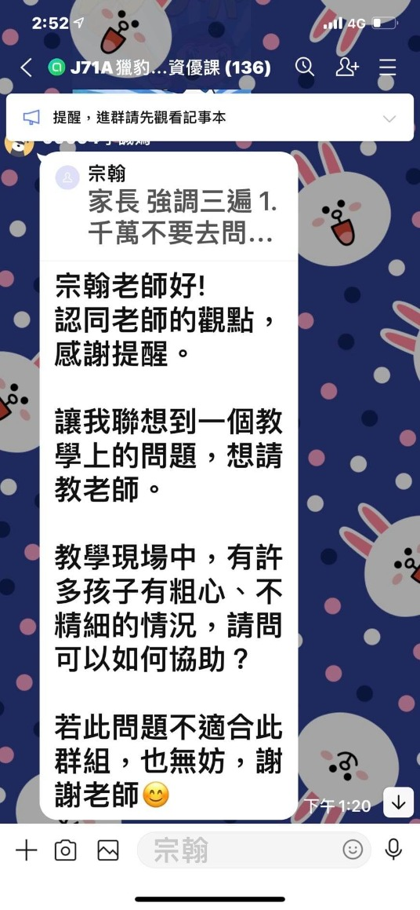

「有關粗心問題」
—圖像式思考（下）
上次J71A，S101課程說明直播之前，開放讓爸爸媽媽們提問，就有許多人問到小孩粗心問題，當時直播，有請宗翰老師說明（直播回放請見底下連結），獵豹網課的班群，除了授課老師和班主任之外，宗翰老師關心孩子們的學習，也會進群，回答大家的疑惑，今天在J71A班群，宗翰老師和大家提到粗心，這是許多孩子們共同的問題，我也在FB與大家分享。
對於做錯的題目，常常有人用「粗心」帶過，但其實可能是學習上思慮不周或觀念不成熟，還是要請孩子把錯題訂正，仔細思考，好好研究老師所指導的喔！
J71A/S101宗翰老師回答爸爸媽媽們的疑惑:
https://youtu.be/tJxry_A322U
---
By 宗翰老師
粗心與否 是個人的個性特質，或者是面對環境的反應，原因不一而足 。
有人在某些場合心不在焉，但在某些環境卻思慮周密。
牛頓把手錶當雞蛋煮的錯誤，絕大多數人一生也不會犯。但去看看他的巨著「自然哲學的數學原理」，誰能比這位科學巨人心思更縝密周全？！
我一個拿IMO銀牌的學生，某次上課缺席，後來我問他怎沒來？他說：啊 忘了 ！ 我去參加「智慧鐵人創意競賽」。
從我小學至今 掉的傘 沒有一百也幾十，但寫數學還好。
我想妳想問的是 考試中粗心犯的錯誤。
其實，許多數學上被理解為粗心的錯 是源於思慮不周或觀念不成熟。
我看過有個性細心學生計算機率的答案最後得到4/3，而渾然不覺答案的荒謬。
整體而言 數學觀念越純熟的，直覺越好的人 在數學上越能避免犯錯，他既能以直覺察覺錯誤，也能以多角度檢視答案。反之，便容易犯明顯的錯誤。不過，隨著數學越來越複雜，知識 技能的倚賴越來越重，「粗心」與否 越來越無足輕重。科學史上，沒有幾個科學家是因為粗心錯過諾貝爾獎的。
考場中的表現，粗心影響有限，「抗壓性」是重點。
「抗壓性」除了天生性格，訓練可以改善很大。

